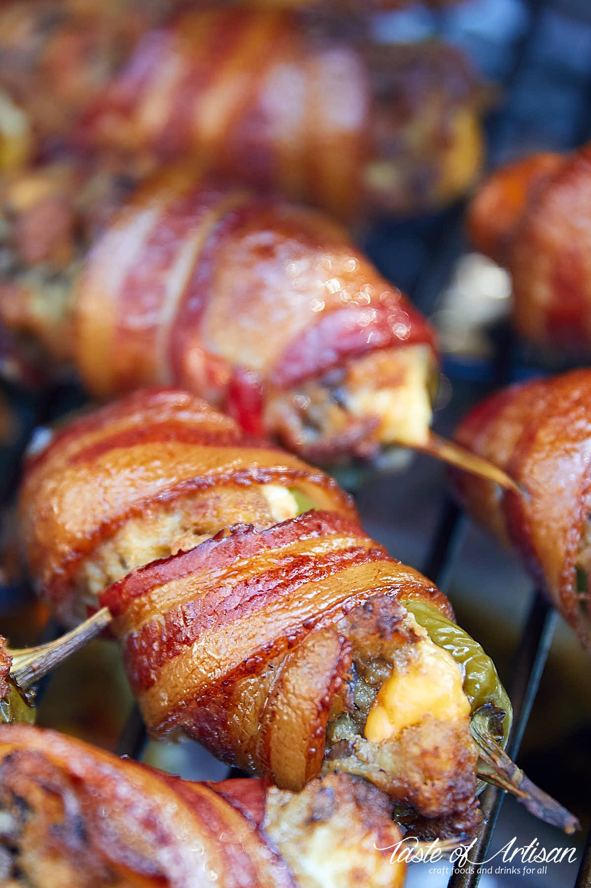

Smoked Jalapeno Poppers

Ingredients
- 10 jalapeno peppers
- 8 Tbsp cream cheese
- 20 slices bacon
- 1/2 lb cheddar cheese - cut into pepper long sticks
- 2 cups turkey stuffing
Instructions
- Cut jalapeno peppers in half, spooning out the white flesh and seeds. Do not remove stems.
Soak in water for 30 minutes to 1 hour for a mildly hot taste
- Meanwhile prepare some turkey stuffing. Add some caramelized onions and
mushrooms to it for more flavor. Mix all together.
- Stuff jalapeno halves with a smidgent of cream cheese, about 1 tsp per one pepper
half, followed by turkey stuffing and cheddar sticks. Wrap one bacon slice around
each. You may want to secure the bacon with a tooth pick.
- Place on a smoker preheated to 225F-250F and smoke for about 1.5 - 2 hours.
Jalapeno poppers are done when they acquire rich maroon/brown/burgundy color
(depends on the wood you are using for smoking)